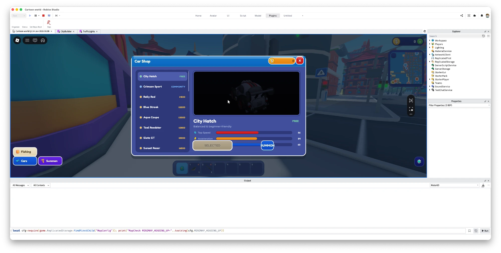
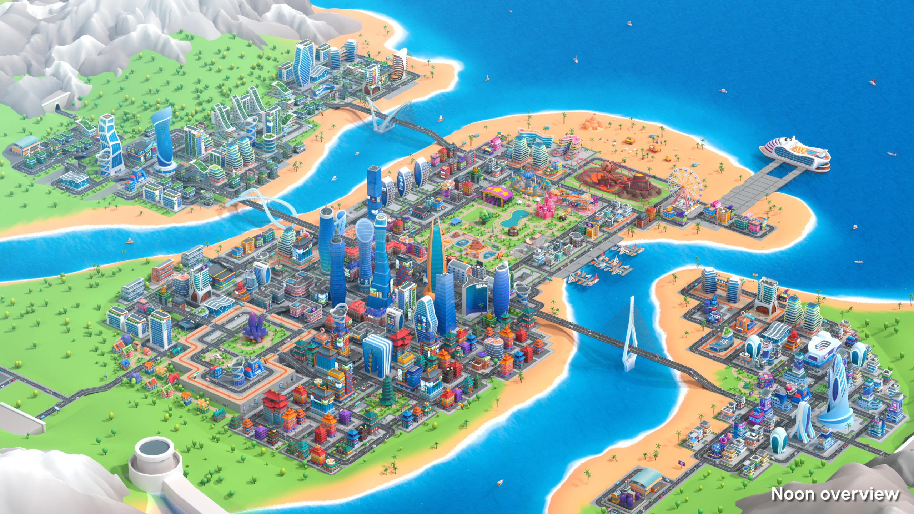
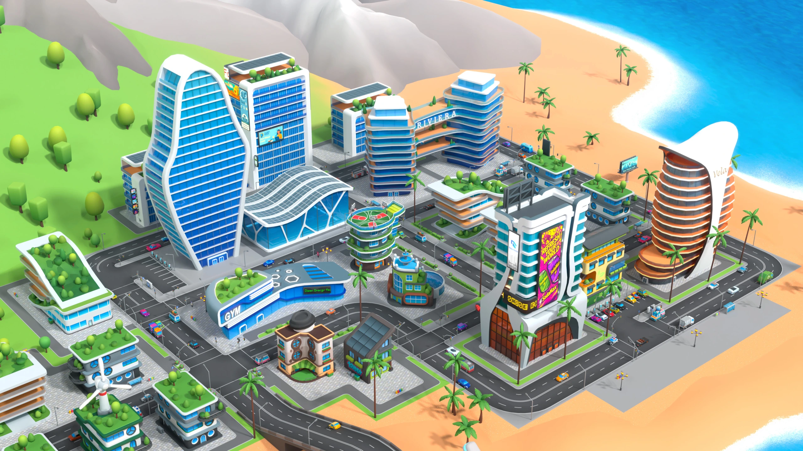

A multiplayer life-sim city for Roblox, built solo in 20 days. Players fish, run delivery jobs, shop for cars, and decorate homes in a persistent economy across a coastal world with traffic, pedestrians, animals, and day/night cycles. The technical challenge: getting a world this large to exist on Roblox at all — which drove a custom asset pipeline and exploit-resistant server systems.



Roblox RemoteEvents / RemoteFunctions across ReplicatedStorage (shared logic), ServerScriptService (systems), and StarterPlayer (client). Server validates all economic actions; client renders and predicts.
An 11,447-node pre-assembled Cartoon_City.glb is deconstructed into 681 modular pieces, each uploaded via Roblox Open Cloud and reconstructed in-world by exact transform. Sidesteps the ~200-mesh import ceiling and preserves instancing.
Life.server.luau drives 150 kinematic traffic cars, 30+ pedestrians, animals, and birds through a shared LOD scheduler (Agents.luau) that culls and tiers agents by distance — movement is CFrame-driven, no physics.
DataStore-backed wallet, garage, fishing dex, and room designs. Every write is an idempotent UpdateAsync merge — a fast server-hop can never roll back a caught species, a purchased car, or earned cash.
UIKit.luau — a reusable component library: world markers, directional arrows, cash HUD, status cards. Data-driven minimap + full-screen map survive streaming; a settings panel exposes perf modes.
Rojo watches src/ and live-syncs into Roblox Studio. A Python toolchain (42 scripts) turns raw GLB → layout.json → generated Luau data modules, with atomic writes that survive crashes mid-build.
| Layer | Technologies |
|---|---|
| Engine | Roblox (3D engine, StreamingEnabled world, leaderstats), cross-platform web / desktop / mobile clients |
| Game Code | Luau (strict-typed) — 111 files, 30,868 lines across server systems, shared modules, and client UI |
| Tooling | Python — 42 scripts, 9,144 lines for asset processing, GLB inspection, manifest generation, animation baking |
| Assets | glTF / GLB import — 3,120 low-poly 3D assets from ITHappy Studios (Cartoon City pack + companion sets); custom coordinate transforms (glTF right-hand ↔ Roblox left-hand) |
| Persistence | Roblox DataStore — wallet, vehicle garage, fishing dex, room designs; autosave + BindToClose flush |
| Networking | RemoteEvents / RemoteFunctions, server-authoritative validation, latency compensation |
| Build | Rojo file-sync, Roblox Open Cloud uploader, generated Luau data modules |
| Config | Luau config modules (CityConfig.luau) for centralized game tuning |
| Port | Godot 4 single-player port under /godot/ for a future standalone release |
A single 94 MB city model exceeds Roblox mesh-import limits and only collapses identical meshes sharing a MeshId. The pipeline deconstructs the monolith, moderates and uploads each piece, then rebuilds from exact world transforms — so 1,446 identical road tiles collapse to one draw call.
150 cars follow lanes kinematically with per-vehicle speed profiles, yield to pedestrians and players, and obey light-synced routing. CFrame-driven — no physics solver runs for the fleet.
30+ NPCs with distance-based LOD — lightweight fallback rigs far away, full cartoon characters up close. Behavior cycles: idle, walking, sitting, posing. Roaming animals and birds add liveliness.
Agents.luau runs one shared scheduler across all agents — far / mid / close tiers with crowd collision avoidance, culling distant agents so a fully populated city holds frame rate.
Dynamic lighting cycles: fresh daytime palette to neon-lit night, synced with traffic-light routing and ambient behavior shifts.
StreamingEnabled with a 3000-stud target radius and 256-stud minimum — the entire coastal city loads progressively with no monolithic load screen.
Modular pieces sharing a MeshId collapse to a single draw call. Reconstructing from modules rather than importing the monolith is what makes the whole map renderable.
| System | DataStore | Mechanics & Server Guards |
|---|---|---|
| Fishing | FishDex | Skill-based reel window validated server-side with a ping-aware grace window; zone-based fish pools (reef / deep / open sea); hotspot proximity spawns rarer catches; rarity-colored cards; monotonic max-merge so a server-hop can't lose a species. |
| Delivery Jobs | Wallet | Distance-scaled payouts, building-based drop-off, min-travel-time guard against teleport exploits. |
| Vehicles | CityGarage_v1 | Persistent garage, free starter cars + purchased upgrades, ownership validated server-side. |
| Wallet | Wallet | Additive cash ledger with timestamp reconciliation and a "+$N" popup UX; never overwritten by stale state. |
| Room Decoration | RoomDesigns_v1 | ~1,200 furniture items with tiered pricing; per-player persistent room layouts (separate ToonRoom Rojo project). |
| Pet Quests | — | NPC-driven task chains that feed the wallet and progression loop. |
UpdateAsync merges and monotonic max-merge on the fishing dex mean a fast rejoin can't roll back progress; race conditions resolve in the player's favor.GetNetworkPing + a reel grace window keep the fishing minigame fair across connection quality.layout.json + asset_map.json.UpdateAsync merge pattern that never overwrites newer data on a DataStore race.681 modular building pieces · 11,447 placed instances · coastal city, ecological district, amusement park, cruise dock, underwater zones.
300+ cartoon characters · 150 traffic cars · 60 parked cars · 30+ ambient NPCs · 13 major animals plus pets and birds.
Fishing (50+ species across zones) · delivery jobs · car shopping · pet quests · room decoration (~1,200 furniture items) · skateboarding · food shopping.
ToonRoom decoration · shopping mall interior · fishing-rod asset library · Godot 4 single-player port — each its own Rojo project.
3,120 low-poly 3D assets from ITHappy Studios — city, interiors, food, characters, vehicles & underwater · 4.5 GB raw library · custom GUI icon set in a unified 3D-render style.
30,868 lines of Luau across 111 files · 9,144 lines of Python tooling · ~1,513 lines of Luau tests · 396 commits in 20 days.
3D art licensed from ITHappy Studios — low-poly Cartoon City & Coastal City packs. All engine, asset-pipeline, and gameplay code is original.